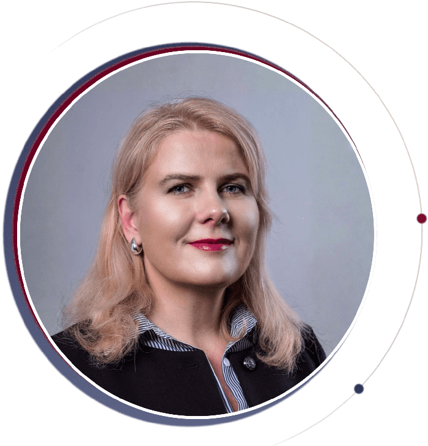

Andrea Forán · Licensed Psychologist
How can I help you, as a psychologist?
Flexible appointment times · Online consultations in English or Hungarian

Areas I can help you with
- My Self-Building Program & Renewed SBP
- Relationship crises
- Persistent anxiety
- Stress-related physical symptoms
- Sexuality-related concerns
- Workplace burnout
- Career counselling
- Deepening self-knowledge
- Recovery after trauma, mentally and physically
- Navigating temporary emotional and physical imbalances
Clear understanding. Stable presence. Real change.
As a psychologist, I support the people who come to me in seeing their own feelings, resources, and possibilities more clearly. I believe every change begins with an honest conversation — and I walk this path with you, bringing professional knowledge, attentiveness, and a steady presence.
I create a safe space where real understanding and growth can happen. My goal is for you to live your life with a stronger sense of identity, more awareness, and greater balance — and, in time, to be able to rely confidently on your own inner strength.
How I WorkSelf-Building Programs for Lasting Change
Sometimes what you need isn't a new situation — it's a new way of functioning. These structured programs help you recognize recurring patterns, understand their roots, and consciously build your life on new foundations.
Self-Building Program (SBP)
For those who keep running into the same obstacles and want to better understand how they function.
Self-knowledge · Boundaries · Conscious change
More about SBPRenewed SBP
Helps you find new balance and rebuild yourself after major life turning points, losses, or big changes.
Starting over · Stability · New foundations
More about Renewed SBP
Relationships. Self-Knowledge. Identity.
Human relationships have mattered deeply to me since adulthood. I believe people and their environment form one whole: some relationships we shape ourselves, and some shape us. We can only turn toward others with real empathy and understanding once we have adequate self-knowledge.
There is no such thing as being too late to find your identity — and the right kind of self-knowledge helps you find your place in the world and live authentically, without inner conflict.
Learn More About MeReady to talk?
Online consultations in English or Hungarian, with flexible appointment times and advance booking.
Get in Touch